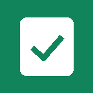

Elige una app. Para tenerla en tu pantalla de inicio, ábrela y en el menú de Chrome toca «Agregar a pantalla principal» o «Instalar app». Repite con cada una.
Para docentes
Banco de PuntosDar, cobrar, canjear y consultar tarjetas.
AsistenciaSesiones por curso con las tarjetas. InformesEstadísticas, tablas y hoja de QR. También en computador.